RECHERCHES
DE NOBLESSE
RECHERCHES
DE NOBLESSE
RECHERCHES
DE NOBLESSE
RECHERCHES
DE NOBLESSE
Référence : La Recherche de Montfaut (1463)
dans Revue de l'Avranchin, 1929-1930, fascicules n°140, 141 et
142
Provenance : Christiane Blin
ELECTION de BAIEUX
Sergenterie de Saint Clair
Colin de Parfourre de couvain
ELECTION de CARENTEN
La ville et dizaines de SaintLo
Guillaume de Parfourou
Guillemin de Parfourou
Référence : Recherche de Jean le Venart, dans Notices, Mémoires
et Documents publiés par la Société d'Agriculture, d'Archéologie
et d'Histoire Naturelle du Département de la Manche, t. 24, 1906
Provenance : Archives Départementales de
Saint-Lô
Ravend de PARFOURU baille par excript sa généalogie à raison de quoy il est personne noble, et dict ce qui ensuit :
En l'an mil IIIc IIIIxx unze estoit vivant Jean de PARFOURU, escuier comme il appert par lettre passée le vingt deuxme de febvrier, en la présence de nobles et puissants sieurs messire Gauillaume Payadt (PAYNEL) chevalier et de Mre Bertrand Payadt (PAYNEL) aussi chevalier, contenant comme led. PARFOURU donna dix livres tournois de rente en don de mariage à damoiselle Isabel MALHERBE, en mariage faisant d'icelle et de Jean de BERGUINY, que led. de PARFOURU avait à prendre à cause de la damoiselle sa mère, sur Jean des LOGES, escuier.
Dud. Jean de PARFOURU descendy Guillaume de PARFOURU, escuier, sieur du lieu, et pour le montrer s'aide d'une lettre passé devant les tabellions de l'an mil IIIIc trente sept, deuement signée et authenticquée faisant mention comme en mariage faisant dud. Guillaume de PARFOURU escuier, sieur dud. lieu et damoiselle Jeanne des ISLES, sa femme, il avait été promis et accordé vingt livres tournois de rente.
Dud. Guillaume de PARFOURU descendy Collin, Jean et Guillaume dicts de PARFOURU, ses enffants, auquel Guillaume nepveu à cause de sa mère fille de Jean de PIERREFITTE, escuier, sieur du lieu, vint et descendy par succession directe, à cause de la mère dud. Guillaume, le fief, terre et sieurie de Pierrefitte. Et pour le montrer, s'aide led. sieur d'une charte contenant que le quatrme jours de mars mil IIIIc cinquante neuf, led. Guillaume de PARFOURU, escuier, nepveu, et attendant la succession dud. Jean de PIERREFITTE, escuier, sieur dud. lieu, fist hommage à Guillaume de BETRULLE, escuier, seneschal de Sainct-Lô deu à l'évesque de Coustances, à raison de sa baronnie de Sainct-Lô, pour lad. terre et sieurie de Pierrefitte, lequel fief est un membre de fief à cour, et usage et gage plège, tenu par un quart de fief de chevalier comme il appert par un démembrement qui baillé en avoit esté en procédure par led. sieur, c'est assavoir en l'an mil IIIIc quarante neuf en la juridiction de lad. baronnie. Et led. Collin eust pour son partage le fief de Lespine. Et led. Guillaume eust le fief de Mesnil Segard, comme il appert par deux lettres passées devant tabellions, l'une du douzme de décembre mil quatre cens quarante trois, et l'autre du jeudy quatrme jour de mars mil IIIIc quarante cinq.
Dud. Guillaume descendy Pierre de PARFOURU, escuier, son fils. Et pour le montrer s'ayde d'une lettre passée devant tabellion, contenant comme le quinzme de décembre mil IIIIc soixante six, Guillaume BRENOT vendit aud. Pierre de PARFOURU, escuier, filz dud. Guillaume, sieur du lieu de Pierrefitte, plusieurs espèces de rentes.
Et dud. Pierre est descendu led. Ravent, à présent sieur ; disant que les autres anciennes chartes dud. de PARFOURU, demeurent devers lesd. Colin et Jean, qui estaient aisnez en la succession dud. Guillaume, desquels est à présent Amaury de PARFOURU, sieur d'Athié et du lieu du Mesnil Segard, lequel demeure au bailliage de Caen. Desquelles chartes produictes par led. Amaury, led. sieur de Pierrefitte s'aide et finallement demeura aud. Guillaume les chartes dud. fief de Pierrefitte à luy succedez à cause de sa mère. Aussi dict que plusieurs de ces chartes ont été perdues par fortune de feu, à raison d'une maison à luy appartenant scise en la paroisse de Saincte Croix de Sainct Lo, où led. sieur estoit demeurant, il y a environ huit ans, laquelle fut bruslée et plusieurs biens estant en icelle.
Dict aussy que durant les guerres où lesd. de PARFOURU, prédecesseurs dud. sieur, ont de tous temps subsecutivement esté au service du roy, sy que ils en eut esté veuz et conquerez à villes et vaillans en guerre, tellement que pour rémunérer de ce les feuz Roys octroyèrent ausd. de PARFOURU pour leurs armoiries la fleur de lys d'or de France, assise en champ d'azur, laquelle ilz ont tousiours dempuis portée de tel et long temps qu'il n'est mémoire du contraire et porte à présent led. sieur.
Produict par led. sieur de Pierrefitte, aujourd'huy dix huictme jour de juillet mil cinq cens vingt trois.
Signé : De PARFOURU.
Un paraphe
Lesd. lettres rendues aud. sieur, à submission d'en faire apparoir.
ROLE DU BAN ET ARRIERE-BAN DE LA VICOMTE DE CARENTAN (1567)
Référence : Rôle du ban et arrière-ban du bailliage de Cotentin
(1567) - Vicomté de Carentan - BNF - Manuscrit français 24.119
Provenance : Laurent Rousselle
Le sieur de Pierrefitte Jean de Parfourru cent solz tz
Référence : Recherches de la Noblesse de
Normandie par Stephano-Louis-Marye de Merval, 1 Mi 395
Provenance : Archives Départementales de
Saint-Lô
de Parfouru : Pierre de Parfouru, sieur de la Perrelle, fils Guillaume demeurant à Saint Lô, paroisse de Sainte Croix, eslection de Carentan ; Guillaume, René, Pierre, Robert et Michel ses fils, aussy Georges sous aagé, fils Pierre ledit Pierre nepveu dudit premier Pierre iceluy Georges, sieur de Pierrefitte.
Ravend, Guillaume et Robert fils demeurans à Saint Evremont de Semilly sergeanterie de Thorigni eslection de Bayeux veu leurs titres d'ancienne noblesse jouiront ; Ledit Robert a pour fils Guillaume.
de Parfouru : Jean de Parfouru fils Robert qui fut frère d'Evremont dont est mention au cahier sous Saint Lô demeurant à Airel, sergenterie Saint Clair, eslection de Bayeux jouira.
de Parfouru : Rolland de Parfouru sieur d'Athy et de Lesnault fils Jean demeurant à Lesnault sergeanterie Saint Jean le Blanc, eslection de Vire a de fils Nicolas
Louis frère dudit Rolland demeurant à Allemagne sergenterie d'Argences eslection de Caen a de fils Charles, Rolland et Gaspard
vue leurs titres et Montfault jouiront
Référence : Généalogies baillées à
Messieurs les commissaires du réglement des tailles de ceux qui se prétendent
nobles en l'élection de Carentan (1624) ; B.N. 32314
Provenance : Patrick Van Nieuwkerke
Parfouru : d'azur à une fleur de lys d'or

Référence : Recherche de 1624 ; 2 Mi 500 R48
Provenance : Archives Départementales de Saint-Lô
Madeleine de Varroc, veuve de René de Parfouru et Ravend son fils

Référence : Recherches de la Noblesse de
Normandie par Stephano-Louis-Marye de Merval, 1 Mi 395
Provenance : Archives Départementales de
Saint-Lô
Parfouru : Veu les tiltres présentés par Magdeleine de Varocq veufve de René de Parfouru pour elle et Ravend de Parfouru son fils bas agé led René fils Pierre fils Guillaume de Parfouru escuyer sieur de Pierrefitte jouiront.
Parfouru : Veu les tiltres présentés par Nicolas de Parfouru, escuyer sieur de Lesnaud, fils Roland fils Jean fils Amaury fils Jean de Parfouru, escuyer. Jouira.
RÔLE DE LA NOBLESSE DU COTENTIN, 1640
Référence : Rôle de la Noblesse du Grand Bailliage
du Cotentin dressé en 1640 ; Notices, Mémoires et Documents, t.11,
1893
Provenance : Archives Départementales de
Saint-Lô
Vicomté de Saint Lô
Sainte Croix de Saint Lô
Ravend de PARFOURU porte lepee ; riche de 400 l.t. de rente
Référence : Etat complémentaire pour faire suite
au Rôle de la Noblesse du Grand Bailliage du Cotentin au XVIIe s. (1640)
; Notices, Mémoires et Documents, t.12, 1894
Provenance : Archives Départementales de Saint-Lô
Sergeanterye de Thorigny
Saint Evremont de Semilly (la Barre de Semilly)
Robert et Richard de PARFOURU escuier, gens de peu
RECHERCHE DE CHAMILLART (1666)
Référence : Recherche de la Noblesse faite par
ordre du Roi (Louis XIV) en 1666 et années suivantes ; Guy
Chamillart ; édition de 1887
Provenance : Archives Départementales de
Saint-Lô
1ère partie (anciens nobles trouvés dans Monfault en 1463)
PARFOURRU ou PARFOURU : d'azur, à la haute fleur de lys d'or

Michel, Claude, Charles, Jacques (prêtre), Louis et Guillaume de Parfourru, Er, frères, de la paroisse de Tilly-la-Campagne, ledit Charles âgé de 28 ans, Jacques 31, Louis 27, Claude 21, Guillaume 19 et Michel 18, sergenterie d'Argences, élection de Caen.
Jean avait épousé Dlle Anne de Saint-Gilles.
Louis, Dlle Marie de Bourgueville, en 1589.
Guillaume, fils Louis, Dlle Marie Masquerel, en 1630.

Ravend de Parfouru,
Er.
Guillaume épousa Dlle Madeleine de la Place.
Pierre, Dlle Perrette de La Dangie, en 1572.
René, Dlle Madeleine Varroc, en 1614.
Ravend, Dlle Esther Thomas, en 1636, en premières noces, et, en deuxièmes,
Dlle Jeanne de La Bigne, en 1659.
Jean, fils Ravend, Dlle Catherine de La Gonnivière, en 1655.

Mathieu de Parfourru,
Er, sieur de Planteret, pour lui et Robert, son
frère mineur ; Georges de Parfourru, Er,
sieur de La Cousture ; Jean de Parfourru, Er, sieur
de la Petitière, demeurant, savoir : lesdits Mathieu, Robert et Georges
en la paroisse de St-Ebremont et de Semilly, ledit Jean en la paroisse de Condé-sur-Vire,
sergenterie de Thorigny, élection de Bayeux.
Ebremont avait épousé Dlle Jeanne Guérard.
Robert, Dlle Barbe de Tresgoz, en 1596.
Robert, fils Robert, Dlle Christine Gourdier (ou plutôt Boudier), en 1640.
Richard, fils dudit Robert Ier, Dlle Guillemette du Buat, en 1633.
Georges, Dlle Françoise Raoult (ou Radulph), en 1664.
Marin, Dlle Marie de Brébeuf, en 1630.
Jean, fils Marin, Dlle Louise de Loucelles, en 1662.